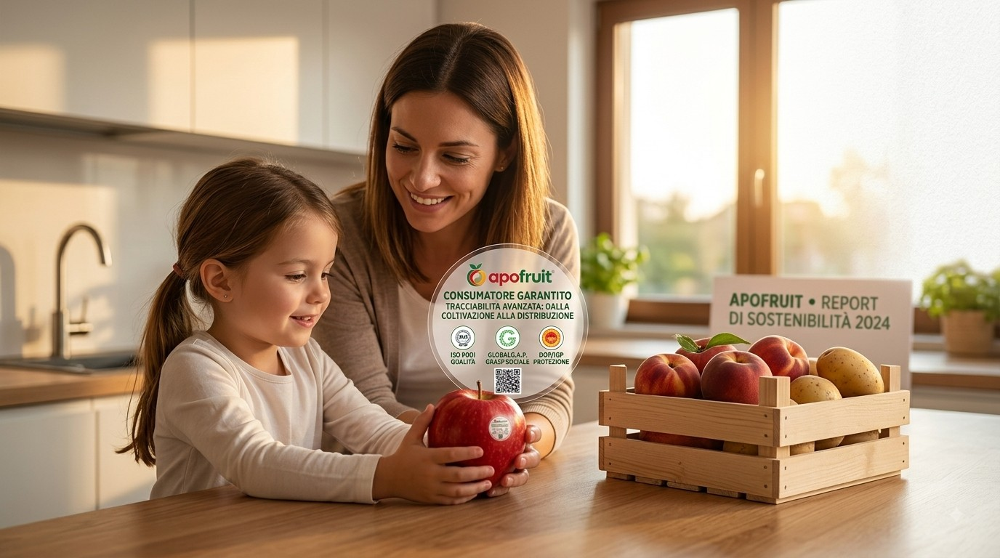
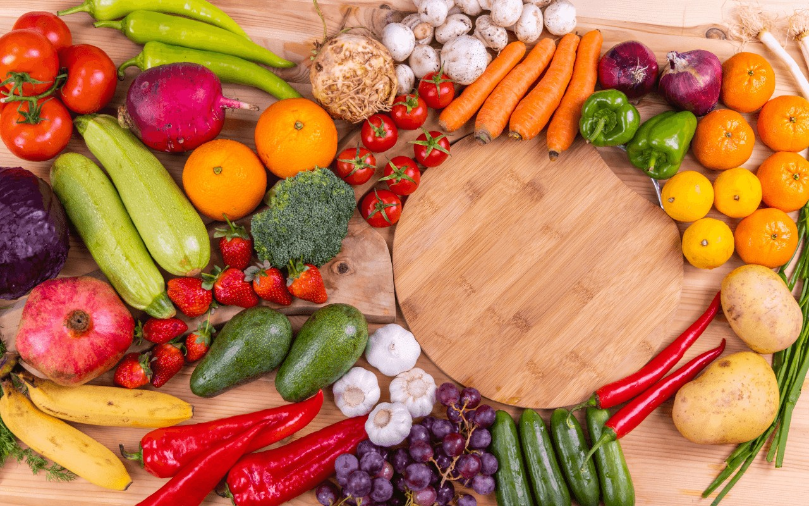

Consumatori e utilizzatori finali
Qualità, Sicurezza e Trasparenza
Apofruit si impegna con grande rigore a garantire la salute e la sicurezza dei propri clienti e dei consumatori finali attraverso severi controlli lungo tutta la filiera produttiva. La Cooperativa assicura la massima trasparenza grazie a sistemi di tracciabilità avanzati che monitorano ogni fase — dalla coltivazione fino alla distribuzione — garantendo l'origine, la salubrità e l'eccellenza dei prodotti ortofrutticoli.
Strategia e Analisi di Materialità (SBM-3)
La sicurezza e la tutela dei consumatori sono al centro della nostra strategia. Rispondiamo alla crescente domanda di alimenti sani e sostenibili attraverso un presidio costante della filiera e una forte valorizzazione delle linee biologiche (come Almaverde Bio).

Impatti Positivi Identificati:
- Informazioni per i Consumatori: Commercializzazione esclusiva di ortofrutta salubre nel pieno rispetto delle normative e dei massimi standard qualitativi.
- Sicurezza Alimentare: Fornitura di informazioni chiare, corrette e complete su caratteristiche, metodi di coltivazione e prezzi.
- Benessere e Salute: Canali aperti e continui per accogliere richieste, segnalazioni e feedback.
Interventi e Certificazioni di Qualità (S4-4)
Per garantire la massima conformità e rispondere alle richieste della Grande Distribuzione Organizzata (GDO) e dei consumatori, Apofruit adotta i più rigorosi standard internazionali:
1. Sistema di Gestione Qualità ISO 9001
L'adozione della certificazione internazionale ISO 9001 attesta un sistema di gestione solido ed efficiente, essenziale per ottimizzare i processi operativi e mantenere elevata la soddisfazione dei clienti.
2. Certificazioni di Origine e Sostenibilità di Prodotto
- IGP e DOP: Certificazioni che tutelano gli standard qualitativi e salvaguardano i metodi di produzione tipici e tradizionali
- Regolamento Biologico UE (848/2018): Garanzia di coltivazioni senza l'uso di sostanze chimiche sintetiche o fitofarmaci artificiali.
- GLOBALG.A.P. & Moduli Aggiuntivi: Certificazione per buone pratiche agricole sostenibili, inclusi i moduli GRASP (aspetti etico-sociali), TESCO Nurture, AH-DLL-GROW e COOP Italia Trasparenza Pesticidi per la gestione responsabile dei fitofarmaci e la tutela dell'ambiente.
3. Controllo Qualità ed Etichettatura al 100%
L'Azienda dispone di due uffici dedicati al controllo qualità, incaricati di verificare il 100% delle etichette (IGP, DOP, QC, Biologico) prima e durante le fasi di produzione secondo procedure rigorose e codificate